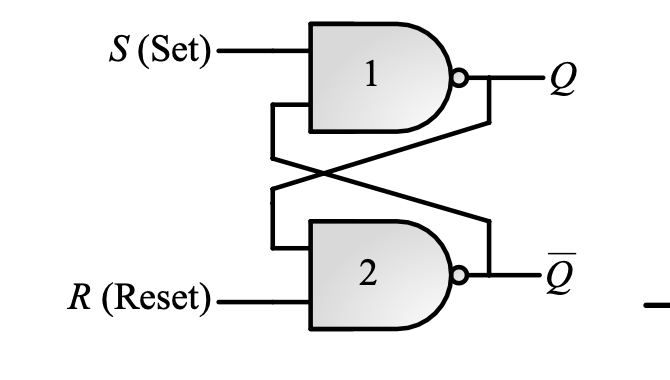
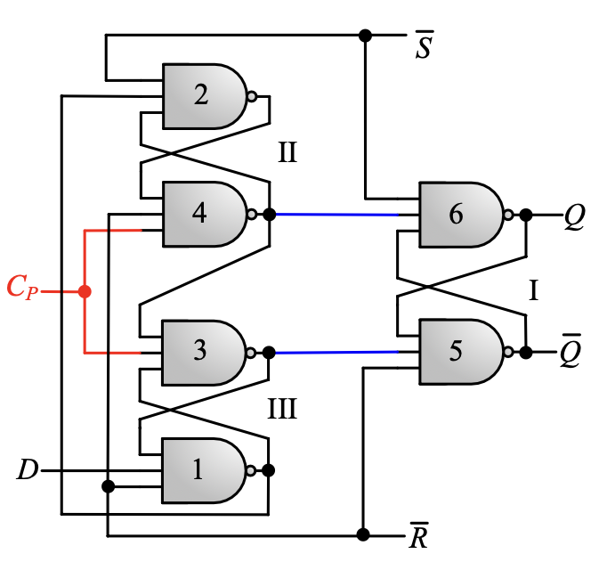

实验九 锁存器与触发器基本原理¶
一 实验目的¶
- 掌握锁存器与触发器构成的条件和工作原理
- 掌握锁存器与触发器的区别
- 掌握基本SR锁存器、门控SR锁存器、D锁存器、SR锁存器、D触发器的基本功能
- 掌握基本SR锁存器、门控SR锁存器、D锁存器、SR锁存器存在的时序问题
二 实验环境¶
- EDA 工具： Logisim Evolution、Vivado（可选）
- 操作系统： Windows 10+
三 实验原理¶
1.锁存器¶
锁存器(Latch)是一种对脉冲电平敏感的存储单元电路，它们可以在特定输入脉冲电平作用下改变状态。锁存，就是把信号暂存以维持某种电平状态。锁存器的最主要作用是缓存，其次完成高速的控制器与慢速的外设的不同步问题，再其次是解决驱动的问题，最后是解决一个 I/O 口既能输出也能输入的问题。锁存器是利用电平控制数据的输入，它包括不带使能控制的锁存器和带使能控制的锁存器。
构成锁存器的充分条件：
- 能长期保持给定的某个稳定状态
- 有两个稳定状态：0、1
在一定条件下能随时改变逻辑状态，即：置1或置0
最基本的锁存器有：SR锁存器、D锁存器
锁存器有两个稳定状态，又称双稳态电路
1.1 SR锁存器¶
将两个具有2输入端的反向逻辑器件的输出与输入端交叉连起来，另一个输入端作为外部信息输出端，就构成最简单的SR锁存器：

这里给出了SR锁存器的两种实现，本次实验可以取任意一种实现。
1.2 门控SR(CSR)锁存器¶
在SR锁存器上添加与门作为使能：

1.3 D锁存器¶
以上两种基本的锁存器都存在一个问题：对于S/R某种输入组合存在不确定状态。
为了消除不确定状态，一种解决方法是限定锁存器的输入状态：

只需一个输入端D就可以控制输入信号，相当于强制使原来SR的输入信号互为反向，避免了SR相同电平下未定义状态的问题。
D锁存器的缺点：存在空翻现象——如果D锁存器直接用在时序电路中作为状态存储元件，当使能控制信号有效时，会导致该元件内部的状态值随时多次改变，而不是保持所需的原始状态值。
2.触发器¶
为了解决锁存器存在的以上问题，实际电路中往往使用触发器。
2.1SR主从触发器¶
由两个门控S-R锁存器串联构成，第二个锁存器的时钟通过反相器取反。当C=1时，输入信号进入第一个锁存器（主锁存器）；当C=0时，第二个锁存器（从锁存器）改变输出；从输入到输出的通路被不同的时钟信号值(C = 1和 C = 0)所断开。

2.2 正边沿维持阻塞型D触发器¶
具体实现如下所示：

四 实验步骤¶
- 实现基本SR锁存器，验证功能和存在的时序问题
- 实现门控SR锁存器，并验证功能和存在的时序问题
- 实现D锁存器，并验证功能和存在的时序问题
- 实现SR主从触发器，并验证功能和存在的时序问题
- 实现D触发器，并验证功能
五 实验提交要求¶
-
包含本实验所使用的所有 Logisim 电路图文件、Verilog 源文件（思考题）、仿真激励文件（思考题）的 zip 压缩包
-
一份不超过 3 页的 PDF 格式的实验报告（无需封面），内容包含：
-
锁存器、触发器的设计思路
-
验证结果以及分析
-
思考题，包含：
-
Verilog语句中触发使用的是“always”语句，谈谈“always”语句和本实验的联系，以及正负边沿触发的实现思路。
-
使用Verilog对本实验提供的正边沿维持阻塞型D触发器进行仿真验证。
提示：
-
initial begin
S = 1;
R = 1;
D = 0; #150;
D = 1; #150;
end
always begin
C=0; #50;
C=1; #50;
end